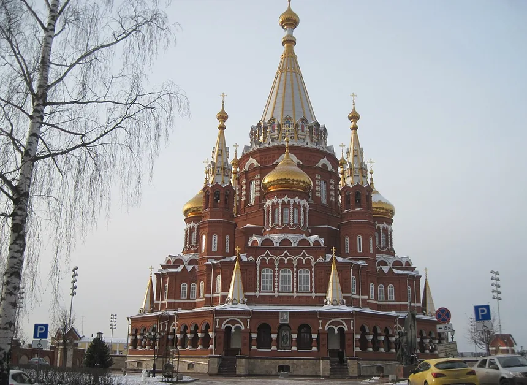
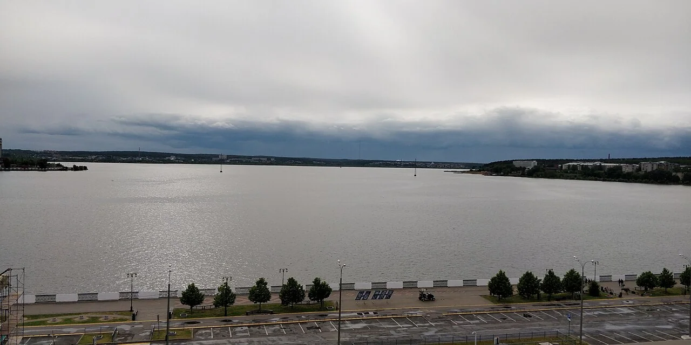
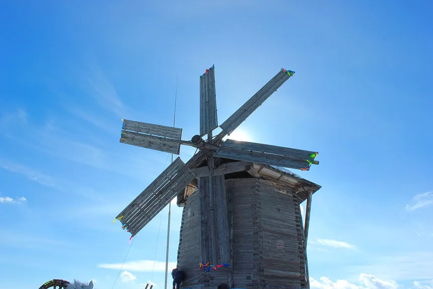
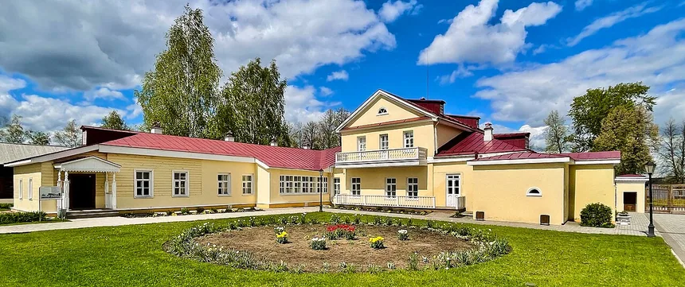
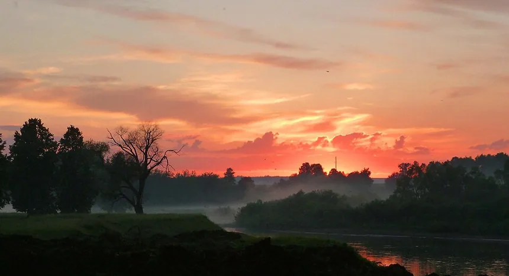

Михайло-Архангельский собор
Краснокирпичный собор на возвышенности в центре Ижевска восстановили в XXI веке на месте утраченного храма.
Между Камой и Вяткой сохранились деревянные усадьбы, заводские пруды и деревенские ремёсла. Здесь Чайковский провёл своё раннее детство.

Города Удмуртии росли вокруг железоделательных заводов XVIII века. В Ижевске и Воткинске об этой истории напоминают пруды, устроенные для заводских плотин. В старых кварталах Сарапула на Каме сохранились купеческие дома.
На реке Иж заработал железоделательный завод. Посёлок при нём со временем вырос в Ижевск.
4 ноября образована Вотская автономная область.
Вотская автономная область переименована в Удмуртскую.
28 декабря автономная область преобразована в Удмуртскую АССР.
Республика получила современное название — Удмуртская Республика.

Краснокирпичный собор на возвышенности в центре Ижевска восстановили в XXI веке на месте утраченного храма.

В музее под открытым небом собраны удмуртские усадьбы, хозяйственные постройки и ветряная мельница.

В доме на берегу Воткинского пруда композитор родился и прожил первые годы. В комнатах воссоздана обстановка его детства.

На берегах Камы парк охраняет леса, речные поймы и водно-болотные угодья.
Кама образует широкие долины с заливными лугами. На севере и востоке республики больше хвойных лесов, к югу в них заметнее липа, клён и дуб. В Ижевске речной пейзаж определяет рукотворный пруд на реке Иж.
Удмуртский язык относится к финно-угорской группе. Праздник Гербер связан с завершением весенних полевых работ. Традиционные костюмы и деревянные усадьбы можно увидеть в «Лудорвае».
Перепечи — открытые корзиночки из теста с начинкой, например грибной или капустной. Табани — пышные лепёшки, которые подают с соусами зырет.